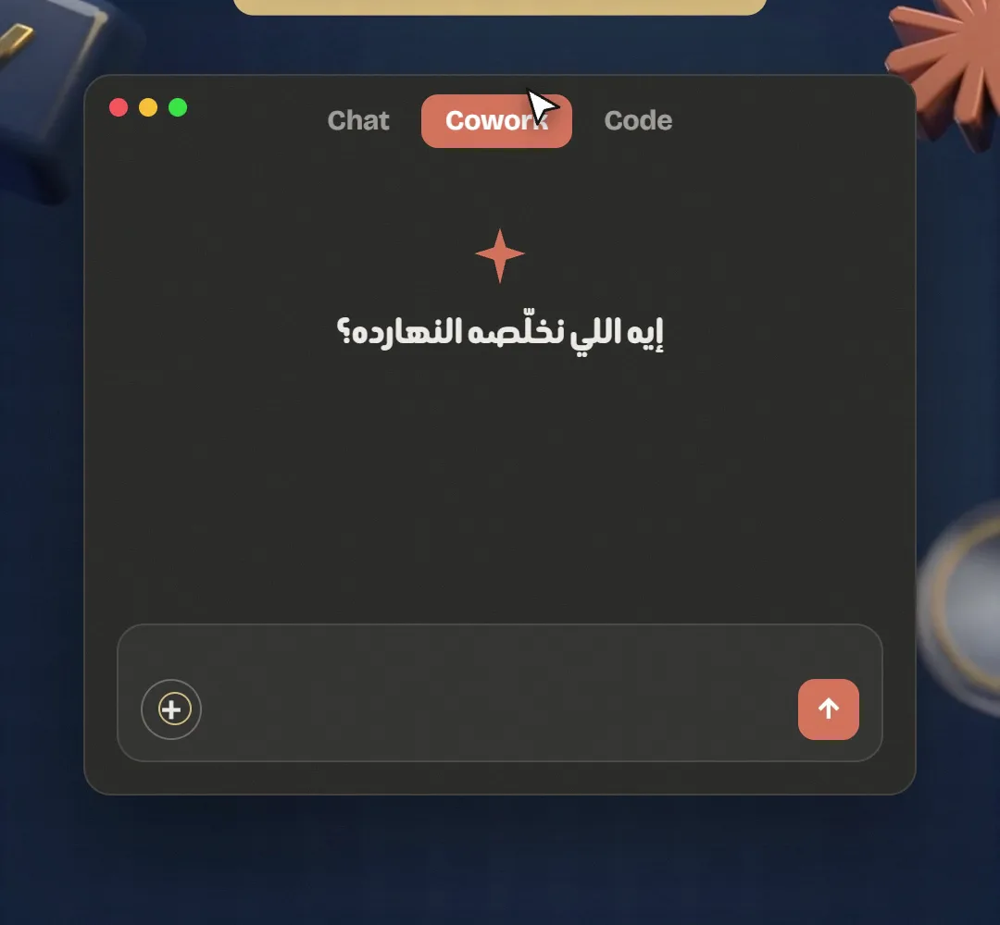
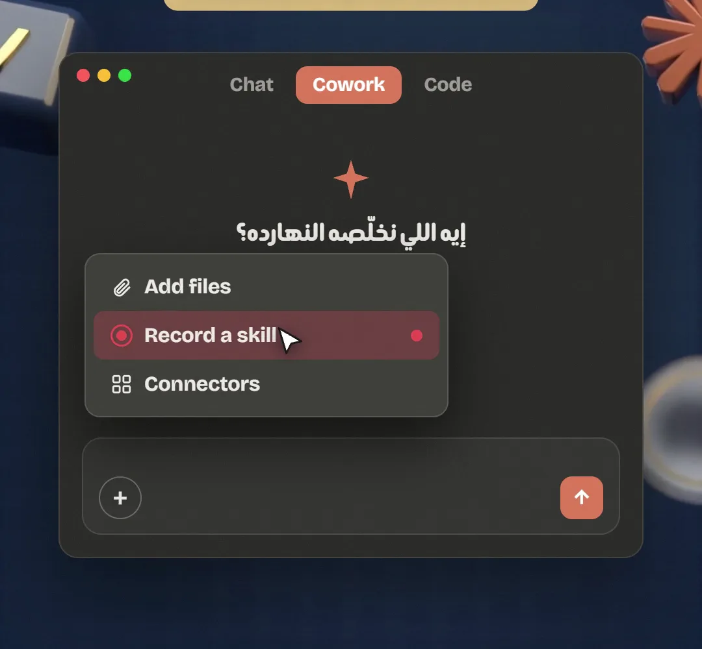
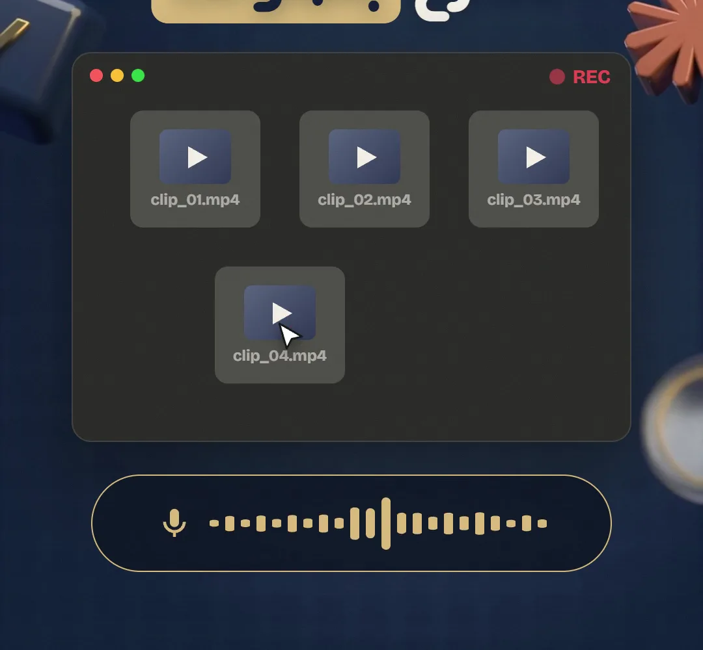
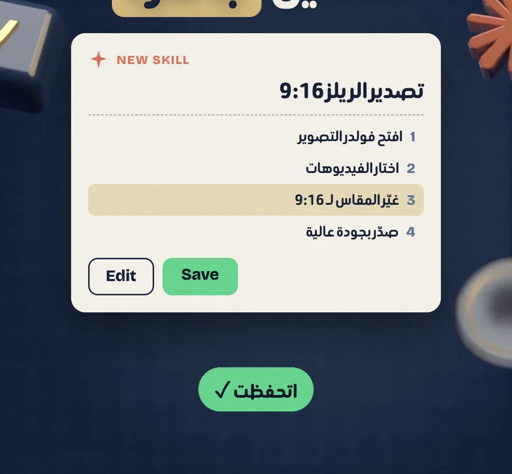
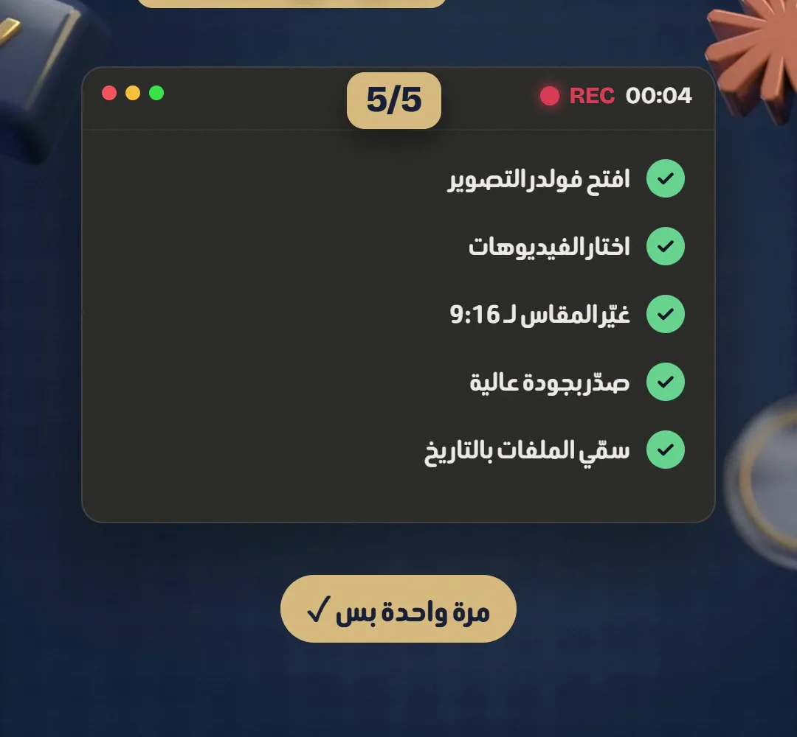

اعملهــامرة واحـــدة
في Cowork جوه تطبيق Claude على الماك فيه «Record a skill»: بتسجّل شاشتك وإنت بتعمل شغلانة بتكررها، وبتشرح بصوتك، وClaude يحوّلها لـ Skill يعملها هو بعد كده. دي الخطوات.


- 01
افتح Cowork
افتح تطبيق Claude Desktop على الماك وادخل تاب Cowork. الميزة بتشتغل من تطبيق الديسكتوب على الماك (مش من الموبايل). لو مش لاقيها، حدّث التطبيق، والإتاحة بتختلف حسب الخطة.

تاب Cowork في تطبيق Claude Desktop (مشهد توضيحي من الريل) - 02
دوس + واختار Record a skill
في صندوق الكتابة دوس «+» واختار Record a skill. أو من Customize ← Skills ← Add ← Record your screen. أول مرة الماك هيطلب صلاحيات Screen Recording وAccessibility، اديهم الصلاحية وممكن تحتاج تقفل Claude وتفتحه تاني.

قايمة الزائد وفيها Record a skill (مشهد توضيحي من الريل) - 03
اعملها واشرح بصوتك
اعمل الشغلانة عادي من أولها لآخرها، وإنت بتتكلم: «دلوقتي بفتح فولدر التصوير، بختار الفيديوهات، بغيّر المقاس لـ 9:16…». Claude بيسجّل الشاشة والكليكات والكتابة وصوتك. لما تخلّص دوس Done.

التسجيل شغال وصوتك بيشرح الخطوات (مشهد توضيحي من الريل) - 04
عدّل واحفظ السكيل
Claude بيتفرّج على التسجيل ويقترح Skill فيها الخطوات. اقراها، عدّل أي خطوة مش مظبوطة، وبعدين احفظها. بعد كده اطلب الشغلانة باسمها في أي تاسك وهو يعملها.

السكيل الجديدة: تعدّلها وتحفظها (مشهد توضيحي من الريل) - 05
قبل ما تسجّل
اقفل أي حاجة سرّية (باسوردات، رسايل، حسابات بنك) قبل التسجيل لأن الشاشة كلها بتتسجّل. وخلّي الجهاز صاحي: حسب تحديث Claude Desktop يوم 19 نوفمبر، التسجيل بيقف لو الشاشة اتقفلت أو الجهاز نام أو غيّرت المستخدم، وبيستنى Done أو Discard، ولو سبته ساعة بيتلغي.

شغلانة من 5 خطوات اتسجّلت مرة واحدة (مشهد توضيحي من الريل)
عايز حد يعملهولك؟
مش فاضي تتعلم وتعمل بنفسك؟ أنا بعمل ريلز لبراندك بنفس الطريقة اللي بشرحها هنا.